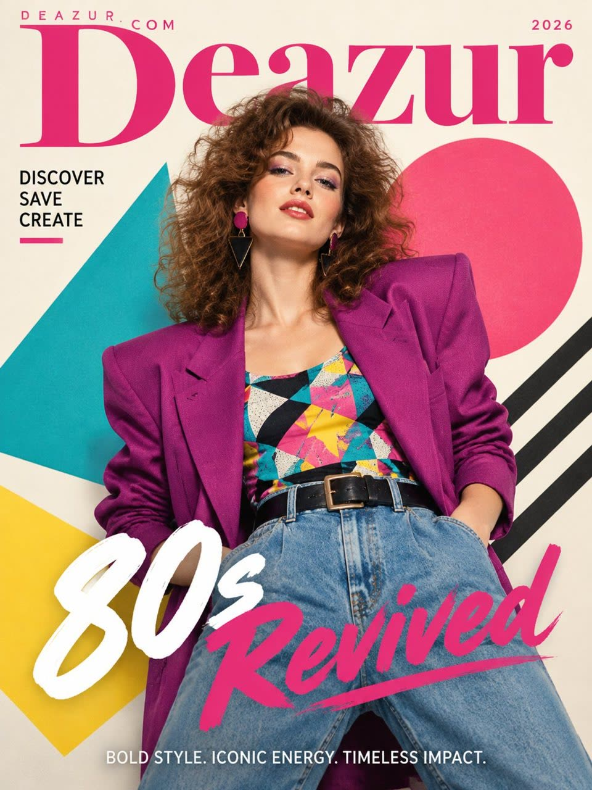

80s retro revival magazine cover
WRD-026Wardrobegpt-image-2.5 flareby Alex Zhang (@Alex_allinai)2026-09-26

Vibrant 1980s power-dressing revival magazine cover — big shoulders, bold color.
Prompt
Create a vibrant 80s retro revival fashion magazine cover featuring a confident female model in bold power-dressing style 80s retro revival fashion editorial, bold saturated colors, power-shoulder silhouette, geometric Memphis-style background shapes, magazine cover typography, high-fashion studio photography with nostalgic 1980s aesthetic, confident playful attitude, clean graphic design layout Overall theme: 80s fashion revival magazine cover. Mood: confident bold playful nostalgic energetic. Style keywords: 80s revival, fashion magazine cover, power dressing, oversized blazer, geometric patterns, Memphis design, retro editorial, bold colors, shoulder pads, high-waisted jeans, studio fashion photography, magazine typography. Subject (default-subject-1): young Caucasian female fashion model with voluminous curly brown hair, 80s-inspired makeup, wearing oversized purple-magenta power blazer over colorful geometric print top, high-waisted blue denim jeans with black leather belt. Pose: leaning back with relaxed confidence, weight shifted to one side, shoulders broadened by blazer. Expression: confident playful smirk, slightly parted lips, self-assured gaze. Environment: studio fashion photography set with graphic geometric backdrop. Background: warm cream off-white base with teal triangle, pink circle, and black diagonal stripe geometric shapes with flat matte graphic shapes in Memphis style, clean studio backdrop. Lighting: studio key light with soft fill. bright even illumination highlighting blazer texture and hair volume. Camera: Full Frame Digital, 85mm portrait lens. vertical magazine cover with model centered, masthead at top, large cover lines overlaid. Color grading: magenta purple, teal, hot pink, cream, light blue denim, black accents. LUT: Warm 80s Editorial. Post-processing: magazine cover typography overlay including masthead 'Deazur' in pink serif, '80s Revived' brush script, geometric graphic elements, clean layout design. Special notes: magazine cover includes masthead 'Deazur' in large pink serif font at top with 'https://t.co/XY9Kh6NrA8' above and '2026' at top right, left sidebar text 'DISCOVER / SAVE / CREATE', large cover line '80s Revived' in white and pink brush script across lower body, and tagline 'BOLD STYLE. ICONIC ENERGY. TIMELESS IMPACT.' at bottom Negative: blurry, noisy, low resolution, modern minimalist, muted colors, flat vector, 3D render, cartoon, illustration, deformed, ugly, low quality, gradient background, vintage film grain; wrong decade styling, modern clothing, neutral expression, closed eyes, extra limbs, anatomical errors, text errors, misspelled masthead, cluttered layout, unrelated objects; malformed hands, extra fingers, fused digits, ocular asymmetry, warped anatomy, bad composition, text artifacts, watermark, logo. This prompt generated the image below. Try it: @neospark_HQ Now with gpt-image-2.5, flare, sunburst, nano banana, and midjourney models. #PromptEngineering #AIArt #NeoSpark
Tags: 1980s, power dressing, magazine cover